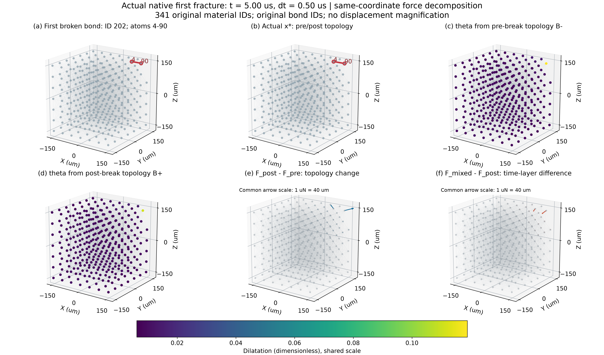
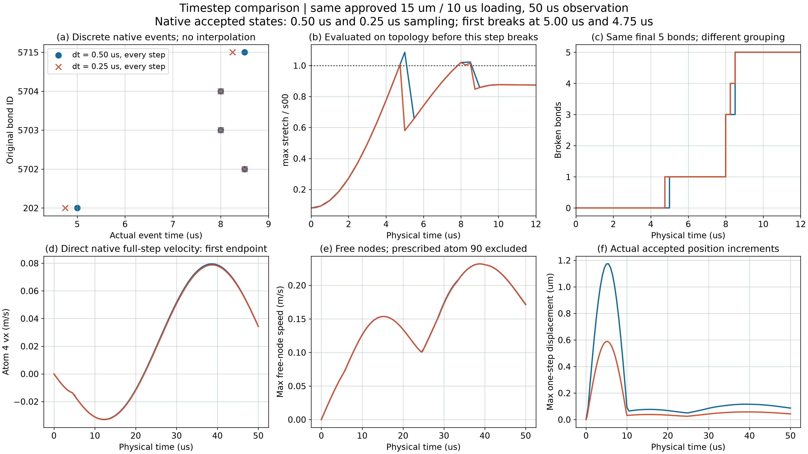
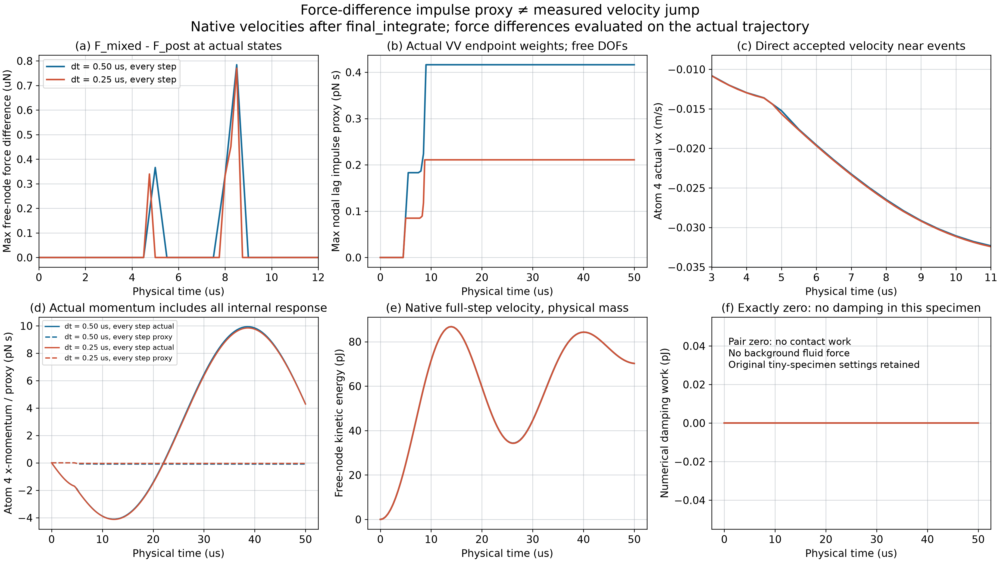
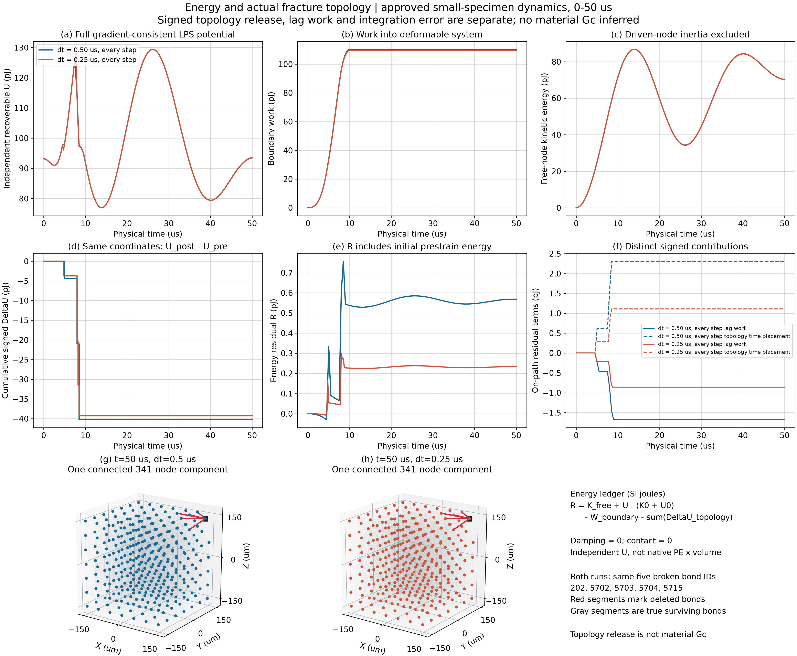
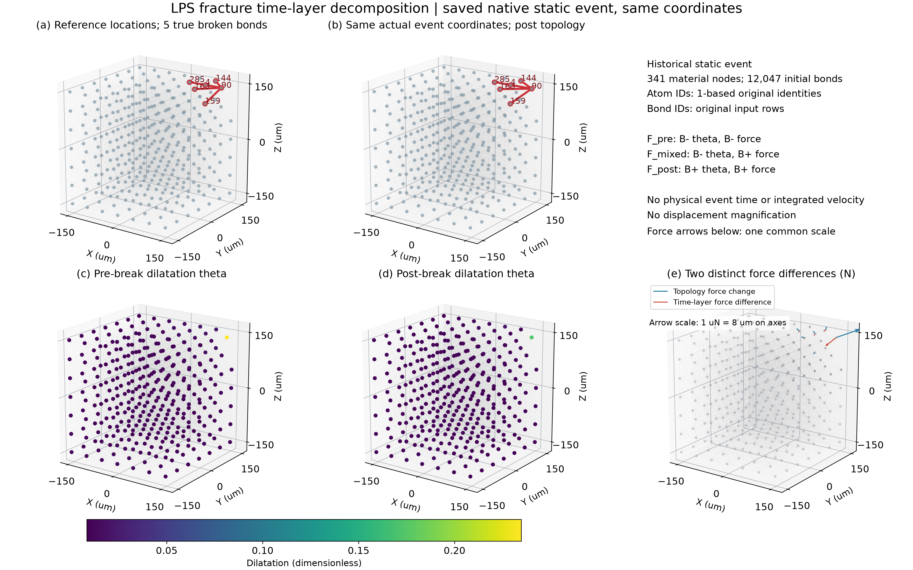

Run ID：20261011T221502Z · 2026-10-12 · 真实小试样数据
两次正式动力学适配已完成。dt 减半后首断冲量代理降为 0.46366 倍，最大能量余额残差从 0.75693 pJ 降至 0.30077 pJ；末态同五条键断裂、仍一个341节点组件。保留当前显式方案。两个步长不足以证明全局收敛，不能解释完整V3细碎屑成因。
| 指标 | dt=0.50 µs | dt=0.25 µs |
|---|---|---|
| 首断时刻 | 5.00 µs | 4.75 µs |
| 全窗自由节点累计冲量代理最大模 | 4.16178×10⁻¹³ N·s | 2.10894×10⁻¹³ N·s |
| 自由节点峰值动能 | 86.78255 pJ | 86.74921 pJ |
| 最终断键数 / 组件数 | 5 / 1 | 5 / 1 |





保留一次零动力步初始化失败记录；成功正式算例2次，原生实例尝试共3次。WSL科研文档已按SHA并发保护更新。计算已停止，本页为静态审查入口。